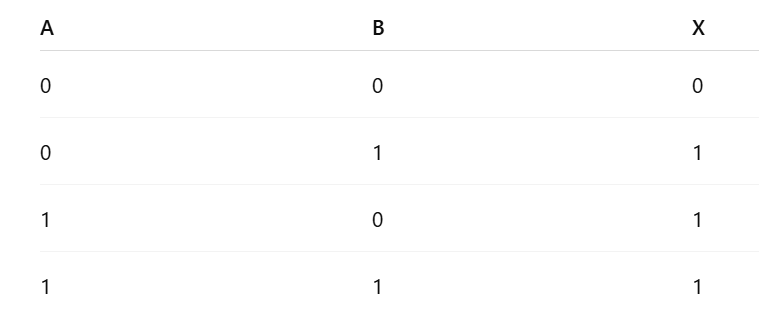

問題3:次の真理値表に対応する論理回路はどれでしょう？

※この画像はchatGPTを用いて生成しました。
1. AND回路
2. OR回路
3. NOT回路
4. XOR回路
解答と解説を見る
正解：2. OR回路
解説：
OR回路は、「どちらか一方でも1なら出力が1になる」回路です。
真理値表を見ると、
A=0、B=1 → 出力1 A=1、B=0 → 出力1 A=1、B=1 → 出力1
つまり、「少なくともどちらかが1なら1」というOR回路の特徴と一致しています。
次の問題